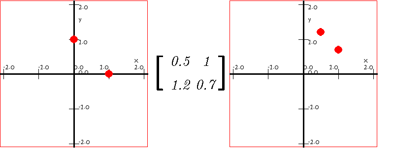
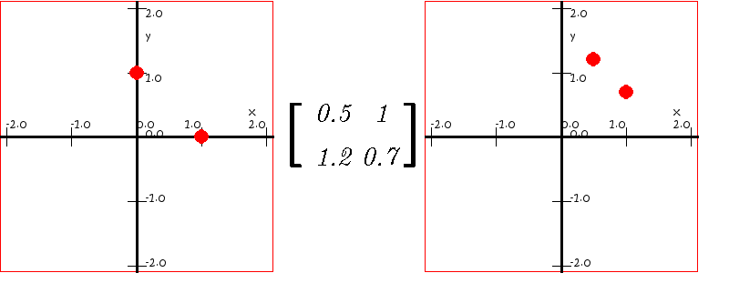
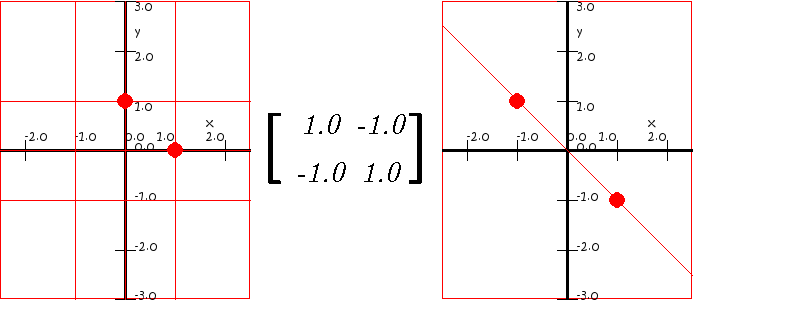
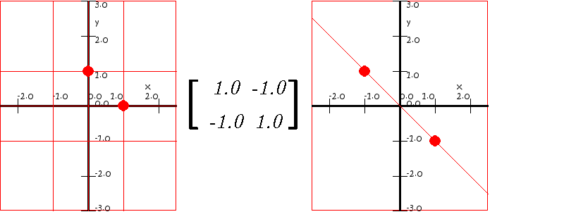

En la sección anterior se estudió la imagen de una transformación matricial de 1D en 2D. Ahora estudiaremos la imagen de una transformación matricial de 2D en 2D.

 

 

 Comentarios y sugerencias: gmunoz@udistrital.edu.co
Comentarios y sugerencias: gmunoz@udistrital.edu.co